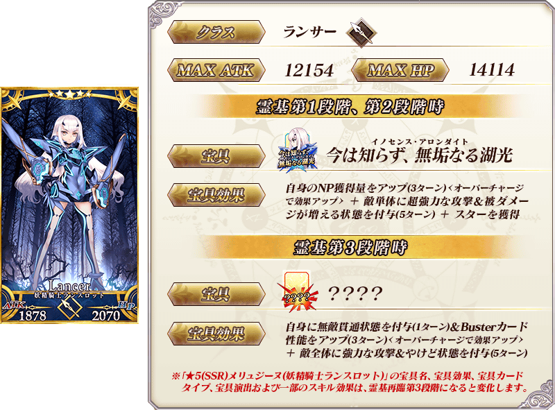
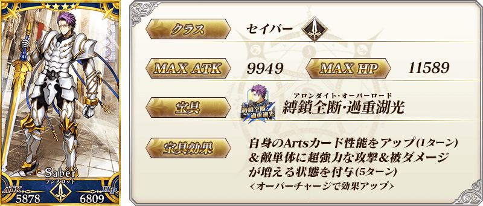
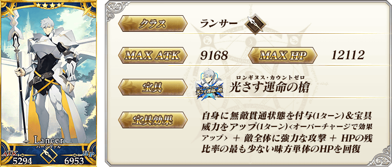
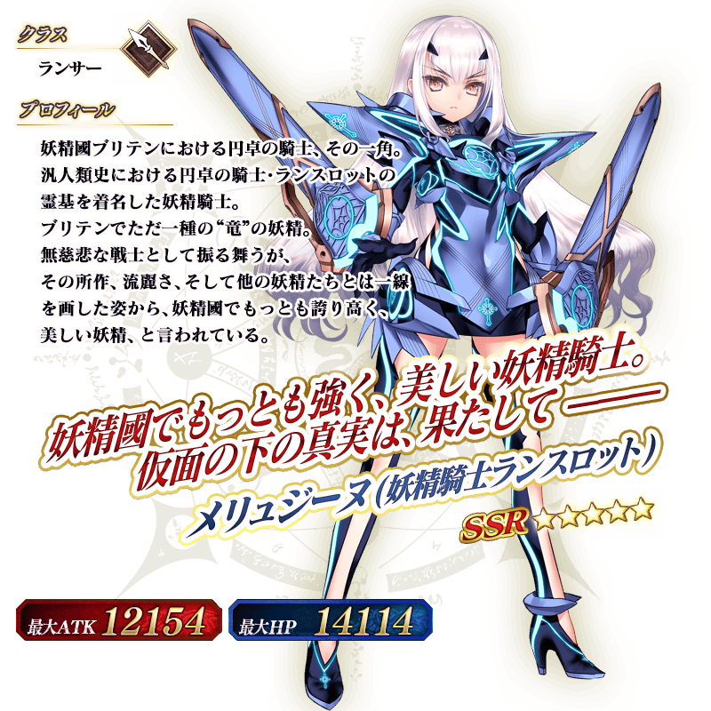

◆「阿瓦隆・勒菲通過聲援Pick Up召喚(每日交替)」期間◆
期間:2021年12月17日(五) 17:00～12月31日(五) 22:59
從第2部 第6章「Lostbelt No.6 妖精圓卓領域 阿瓦隆・勒菲 星辰誕生之刻」關聯從者之中，包含1位期間限定從者的3位從者Pick Up！
※就算未滿足主線關卡開放條件的狀態也能進行本召喚。
▼期間限定從者
【常駐Pick Up】
・★5(SSR)美露莘(妖精騎士蘭斯洛特)
▼Pick Up從者
【每日交替Pick Up】
・★4(SR)蘭斯洛特(Saber)
・★4(SR)帕西瓦爾
Pick Up期間中，Pick Up對象從者的出現機率提升！
詳情請在聖晶石召喚畫面左下的召喚詳細確認。
11次召喚中確定1張★4(SR)以上和確定1位★3(R)以上的從者！ ※確定★4(SR)以上包含從者和概念禮裝。
◆關於1天1次限定的有償聖晶石召喚◆
※可以1天1次限定於期間限定召喚用有償聖晶石1個進行「1回召喚」。
※透過有償聖晶石1個的「1次召喚」，每天3:00重置。
※透過有償聖晶石1個的「1次召喚」對應的聖晶石召喚有好幾個的情況，各個召喚中1天各進行1次有償聖晶石1個的「1次召喚」。
※請注意就算進行透過有償聖晶石1個的「1次召喚」，不包含在1次獎勵的計算。
※聖晶石購入時賦予的「附贈(オマケ)」是做為無償聖晶石而不包含在有償聖晶石的個數，請注意別搞錯。另外，持有聖晶石的細項，可從持有道具一覧確認。
◆關於透過召喚獲得從者硬幣
在期間限定召喚、故事召喚、友情點數召喚中入手從者時，可獲得該從者的從者硬幣。
◆有關從者的注意◆
※「★5(SSR)美露莘(妖精騎士蘭斯洛特)」的特定靈基再臨階段開放前，「變化後的寶具卡」的立繪一部份不會顯示。
※「★5(SSR)美露莘(妖精騎士蘭斯洛特)」的靈基再臨第3階段包含「Lostbelt No.6 妖精圓卓領域 阿瓦隆・勒菲 星辰誕生之刻」的劇透。敬請注意。
※下述的從者在Pick Up期間結束後不會追加到故事召喚。
・★5(SSR)美露莘(妖精騎士蘭斯洛特)
※下述的從者在Pick Up期間結束後仍會在故事召喚被抽出。
・★4(SR)蘭斯洛特(Saber)
・★4(SR)帕西瓦爾
◆有關從者真名的注意◆
※「★5(SSR)妖精騎士蘭斯洛特」靈基再臨到第2階段的話名稱會變成「★5(SSR)美露莘」。
◆「阿瓦隆・勒菲通過聲援Pick Up召喚(每日交替)」Pick Up內容◆
| Pick Up期間 | Pick Up內容 | |||
|---|---|---|---|---|
| 全天Pick Up | 每日交替Pick Up | |||
|
12/17(五) 17:00～ 12/19(日) 22:59 |
期間限定從者 ★5 美露莘(妖精騎士蘭斯洛特) |
★4 帕西瓦爾
|
||
|
12/19(日) 23:00～ 12/21(二) 22:59 |
★4 蘭斯洛特
(Saber) |
|||
|
★4 帕西瓦爾
|
||||
|
12/21(二) 23:00～ 12/23(四) 22:59 |
★4 蘭斯洛特
(Saber) |
|||
|
12/23(四) 23:00～ 12/25(六) 22:59 |
★4 帕西瓦爾
|
|||
|
12/25(六) 23:00～ 12/27(一) 22:59 |
★4 蘭斯洛特
(Saber) |
|||
|
★4 帕西瓦爾
|
||||
|
12/27(一) 23:00～ 12/29(三) 22:59 |
★4 蘭斯洛特
(Saber) |
|||
|
12/29(三) 23:00～ 12/31(五) 22:59 |
★4 帕西瓦爾
|
|||
※請注意會以每日交替變更Pick Up的從者。
 ※「★5(SSR)美露莘(妖精騎士蘭斯洛特)」只限靈基再臨第1階段或第2階段的情況，在戰鬥中使用特定技能的話會變化成靈基再臨第3階段，可變化一部份技能的效果與寶具效果。另外，以技能效果變化成靈基再臨第3階段，在該場戰鬥中使用同様技能後不會返回第1・第2階段。 ※靈基再臨至第3階段後，想使用第1・第2階段時的寶具及技能的情況，於從者詳細畫面將戰鬥角色的設定變更成第1階段或第2階段才能使用。 ※特定靈基再臨階段開放前，「變化後的寶具卡」的立繪一部份不會顯示。 ※「★5(SSR)妖精騎士蘭斯洛特」靈基再臨到第2階段的話名稱會變成「★5(SSR)美露莘」。 ※「★5(SSR)妖精騎士蘭斯洛特」的靈基再臨第3階段包含「Lostbelt No.6 妖精圓卓領域 阿瓦隆・勒菲 星辰誕生之刻」的劇透。敬請注意。
 ※上述「★4(SR)蘭斯洛特(Saber)」的卡面為靈基再臨第1階段。
 ※上述「★4(SR)帕西瓦爾」的卡面為靈基再臨第1階段。
 ※「★5(SSR)妖精騎士蘭斯洛特」靈基再臨到第2階段的話名稱會變成「★5(SSR)美露莘」。 ※「★5(SSR)美露莘(妖精騎士蘭斯洛特)」的靈基再臨第3階段包含「Lostbelt No.6 妖精圓卓領域 阿瓦隆・勒菲 星辰誕生之刻」的劇透。敬請注意い。
介紹在本召喚Pick Up的3位從者寶具演出！
Pick Up從者3騎的寶具演出於一部份裝置有對應全螢幕顯示。
【★5(SSR)美露莘(妖精騎士蘭斯洛特)】
【★4(SR)蘭斯洛特(Saber)】
【★4(SR)帕西瓦爾】
其他還有「主線關卡通過聲援宣傳活動 第4彈」以期間限定同時舉辦！
關於詳情，請自下述橫幅確認。